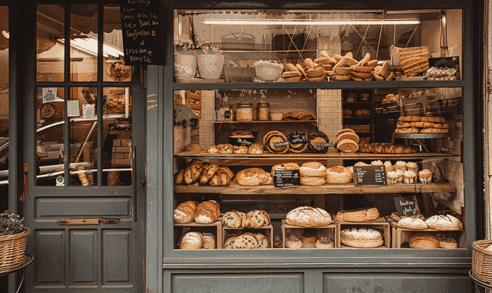

Thoughtful sourcing
We select dependable regional suppliers when possible and choose ingredients for freshness, flavor, and consistency.
Our neighborhood story
North Star Bakery was created to offer familiar food, friendly service, and a gathering place that feels connected to the people around it.

What began as a small collection of family recipes grew into a neighborhood bakery serving commuters, families, and event planners. We believe everyday food can still feel special when it is prepared carefully and shared with others.
Our team welcomes customers by name, supports local events, and develops seasonal items inspired by community traditions.
We select dependable regional suppliers when possible and choose ingredients for freshness, flavor, and consistency.
Our breads and pastries are prepared in small batches so the team can give attention to every step.
We want new visitors and longtime neighbors to feel comfortable asking questions or planning an order.
Meet the people behind the counter
Maya leads bread production and enjoys teaching customers how to store and serve artisan loaves.
Jordan creates the rotating pastry menu and brings seasonal fruit and spices into familiar favorites.
Elena helps families and event planners organize preorders and connects the bakery with local events.